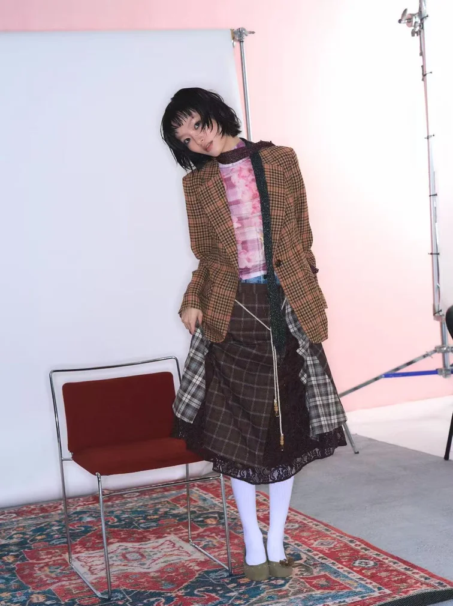
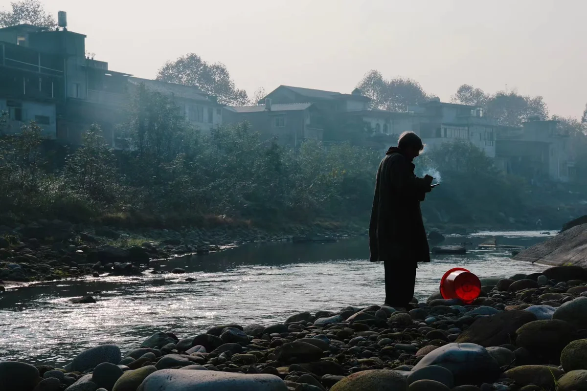
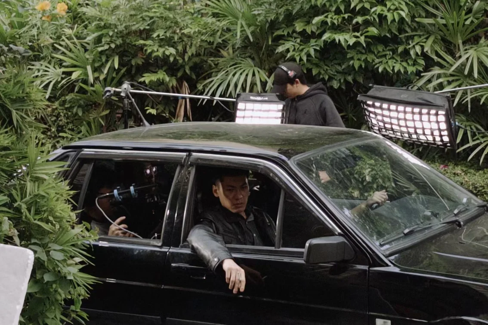

选题与文案
ChatGPT · 豆包
使用 AI 辅助选题构思与文案撰写，为内容策划提供思路与表达支持。
内容策划文案创作小红书账号累计浏览
小红书账号累计点赞
AI 辅助创作 / 内容运营 / 营销策划
AI-ASSISTED CREATIVE WORK
选题与文案 · 图片制作 · 视频字幕
将 AI 工具用于具体的内容创作环节
ChatGPT · 豆包
使用 AI 辅助选题构思与文案撰写，为内容策划提供思路与表达支持。
内容策划文案创作即梦 AI
使用即梦制作图片，将文字创意转化为可视化素材，辅助内容视觉表达。
AI 生图视觉表达剪映 AI
使用剪映 AI 生成字幕，结合视频剪辑与后期包装，完成视频内容制作。
AI 字幕视频制作SELECTED WORK
账号运营 · 品牌合作 · 媒体传播
用具体项目呈现策划与执行能力。
内容运营 / 商业合作
独立运营宠物相关账号，围绕宠物话题开展选题策划与内容创作，累计获得 18 万浏览、1.2 万点赞。
独立完成内容选题、创作与运营；对接“它它理想国”猫条品牌推广，理解 brief 需求并完成内容执行。
积累从内容策划、品牌对接到数据复盘的全流程运营经验。
影像叙事 / 非遗记录
以影像记录非遗工艺的文化价值与传承现状，参与湖南望城皮影戏、海南保亭蓝染与海南黎陶相关纪录片创作。
担任湖南望城皮影戏非遗纪录片导演，参与策划海南保亭蓝染、海南黎陶《艺·黎陶》非遗纪录片。
围绕工艺文化价值与传承现状开展内容策划，从选题、拍摄执行到后期推广全程跟进，推动非遗文化的记录与传播。
实习实践 / 媒体宣传
参与第十四届、第十五届中国航展相关媒体工作，在媒体接待、新闻采编、舆情监测与传播执行中积累现场经验。
参与第十五届中国航展媒体对接与采访安排，独立完成航展期间新闻报道收集、采编与整理，汇编成公司内部记录册。
围绕航展媒体传播需求拟定访谈提纲，完成媒体访谈与反馈收集，整理媒体关注点与内容需求。参与舆情监测、危机公关应对与媒体沟通文件撰写。
在第十四届中国航展期间参与媒体接待、现场采访安排，策划“我与航展共成长”系列活动，从内容策划到传播落地全程跟进。
PRODUCTION & VISUAL PORTFOLIO
负责拍摄排程、场地协调及现场后勤，统筹剧组沟通与进度管控，并承担剧照及幕后花絮拍摄。将活动统筹、资源协调与内容制作落实到现场执行。

佳能 EOS R8 · 单灯与柔光箱
构图、布光与视觉表达

场景氛围与人物叙事
影像内容制作

剧组协作与现场观察
幕后花絮拍摄
EXPERIENCE
内容生产、公众号运营与传播执行
2024.10 — 2025.12
危机公关与媒体宣传部门实习生
参与媒体对接、采访统筹、新闻报道整理及公司微信公众号运营；协助舆情监测、媒体沟通与危机公关应对，参与新闻通稿、宣传物料及应对口径撰写，为品牌传播与舆情管理提供支持。
2024.07 — 2024.09
记者实习生
在融媒体中心参与残运会、领导人访问等活动报道跟进，开展桌面研究与选题策划，独立完成文稿和线下采访调研；参与珠海电视台新闻剪辑及“珠海特区报”新媒体短视频制作，署名作品发布于官方视频号，协助微信公众号内容编辑、排版及推送。
2023.07 — 2023.08
摄影助理
沟通顾客拍摄需求并推进拍摄计划，协助摄影师完成布光与灯光布置，参与照片后期制作，积累摄影执行与视觉内容创作经验。
2022.10 — 2022.11
危机公关与媒体宣传部门实习生
协助媒体接待与现场采访安排，参与舆情监测、新闻通稿撰写和宣传物料制作；策划“我与航展共成长”系列活动。
2025.09 — 2027.08
传播学
整合营销传播、品牌策略传播、社会统计分析、媒介心理学
2021.09 — 2025.06
广播电视编导
影视策划、视听语言、摄像与剪辑
2026.08
Operational Marketing · Online Marketing
TOOLKIT
桌面研究、定性访谈、定量问卷、访谈提纲、线上与线下调研、结构化信息整理
选题与文案、微信公众号编辑排版及推送、小红书运营、品牌 brief 对接、活动策划与媒体沟通
Excel、PPT、SPSS、Tableau、爱图说、文档写作与数据可视化
Premiere、剪映、Photoshop、Canva；相机拍摄、布光、剪辑、调色与包装；具备 Lightroom、达芬奇基础使用经验
LET’S CONNECT
正在关注整合营销、内容运营与策划方向的机会，欢迎联系。